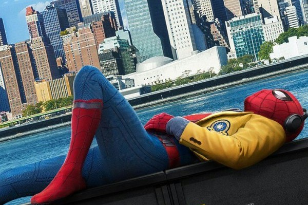

Spider-Man: Homecoming (2017), dirigida por Jon Watts, presenta a Peter Parker, interpretado por Tom Holland, después de su aparición en Captain America: Civil War. Peter es un adolescente que intenta combinar su vida como estudiante de secundaria con sus responsabilidades como Spider-Man. Mientras busca demostrarle a Tony Stark que está preparado para ser un verdadero héroe, aparece Adrian Toomes, conocido como El Buitre, quien utiliza tecnología alienígena recuperada para fabricar y vender armas. La película se desarrolla principalmente en Nueva York y utiliza como escenario la vida cotidiana de Peter: su escuela, su barrio, su casa y diferentes espacios urbanos. Esto permite mostrar a Spider-Man desde una perspectiva más juvenil y cercana, diferenciándose de otras versiones anteriores del personaje.
Produccion
Título: Spider-Man: Homecoming
Año: 2017
Director: Jon Watts
Productores: Kevin Feige y Amy Pascal
Guion: Jonathan Goldstein, John Francis Daley, Jon Watts, Christopher Ford, Chris McKenna y Erik Sommers.
Basada en: los personajes de Marvel Comics creados por Stan Lee y Steve Ditko.
Productoras: Marvel Studios, Columbia Pictures y Pascal Pictures.
Protagonista: Tom Holland como Peter Parker / Spider-Man.
Principal antagonista: Michael Keaton como Adrian Toomes / El Buitre.
Impacto en el cine y en el personaje
Integración al MCU: Marcó el regreso de los derechos compartidos entre Sony Pictures y Marvel Studios, permitiendo que Peter Parker interactuara con los Vengadores.
Consolidó a Tom Holland como el nuevo rostro del héroe, apostando por una comedia escolar con estilo clásico de John Hughes en lugar de repetir la tragedia original.
Enfoque en el vecindario: Recuperó la esencia de los cómics al centrarse en un conflicto a menor escala ("el héroe del vecindario") en contraste con las amenazas globales de otros filmes.
Éxito en taquilla: Se convirtió en la segunda película del arácnido más taquillera de la historia en su momento y sentó las bases para exitosas secuelas.
Locaciones
Aunque la historia está ambientada principalmente en Nueva York, gran parte del rodaje se realizó en distintas ciudades de Estados Unidos. Entre las principales locaciones utilizadas se encuentran:
Atlanta, Georgia, donde se realizaron numerosas filmaciones.
Nueva York, especialmente zonas de Queens, relacionadas con el barrio de Peter Parker.
Los Ángeles, California, donde se utilizaron diferentes establecimientos educativos para representar la escuela de Peter.
Berlín, Alemania, que también figura entre las locaciones de rodaje.
Entre los lugares utilizados para representar la escuela aparecen Reseda High School, Van Nuys High School y Franklin K. Lane High School, en Los Ángeles y Nueva York respectivamente. También se utilizó Sunnyside, Queens, para representar el barrio de Peter.